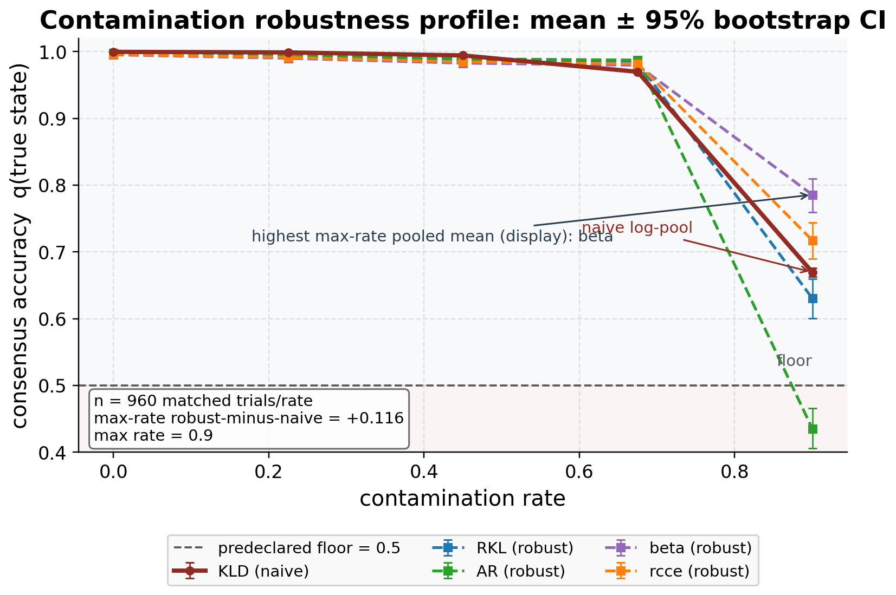
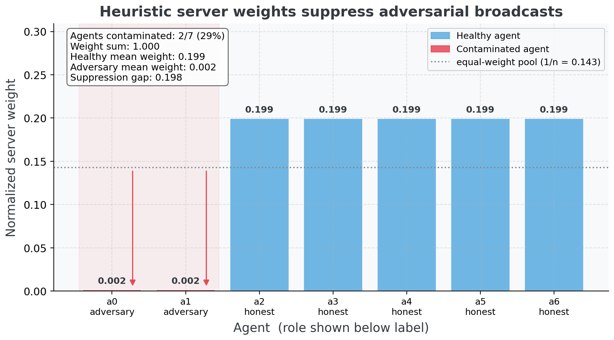
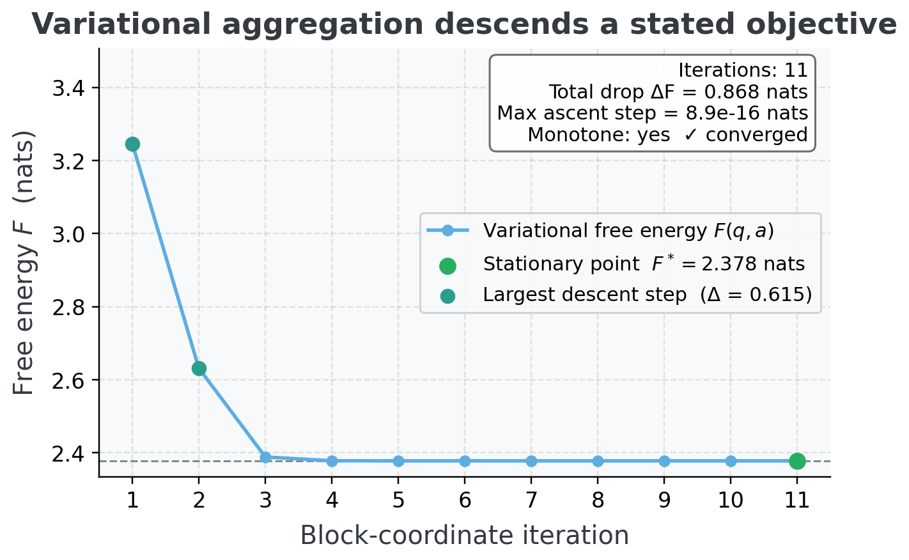
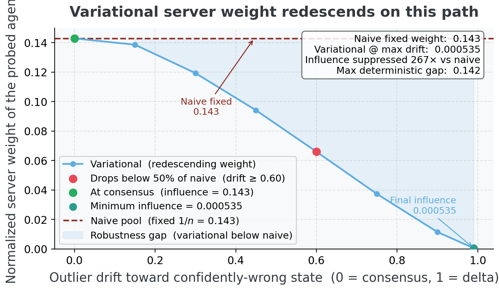

Contamination sweep: regime-dependent server behavior under declared attacks
This contamination experiment compares an active-inference colony
with server operating points named for the FedGVI client-divergence
vocabulary (Mildner et al. 2025); the cited sources do not make this
categorical belief-fusion comparison. A colony of 7 sentinels broadcasts
soft beliefs about a shared state, while 2 saboteurs mix toward a
confident-wrong delta at each contamination rate.
KLD is the standard log-linear pool (server robustness 0,
Eq. (6)); the other
labels denote robust_aggregate heuristic settings with
constants KLD (c=0.00), RKL (c=1.50), AR (c=1.30), beta (c=1.70), rcce
(c=1.60), not literal client losses or divergences. The estimand is
consensus mass \(q(\text{true
state})\).
As the contamination rate rises across \(\{0, 0.225, 0.45, 0.675, 0.9\}\), the
standard (KLD) consensus accuracy degrades
monotonically:
| Contamination rate | KLD | RKL | AR | beta | rcce |
|---|---|---|---|---|---|
| 0 | 1.000 | 0.997 | 0.998 | 0.996 | 0.996 |
| 0.225 | 0.999 | 0.993 | 0.995 | 0.990 | 0.992 |
| 0.45 | 0.995 | 0.987 | 0.990 | 0.984 | 0.986 |
| 0.675 | 0.975 | 0.985 | 0.989 | 0.981 | 0.983 |
| 0.9 | 0.693 | 0.984 | 0.988 | 0.980 | 0.982 |
- Standard accuracy degrades monotonically with rate: Yes
- At the worst rate (0.900), at least one robust member stays at or above the accuracy threshold 0.50: Yes (standard accuracy there is 0.6928, highest pooled robust mean 0.9880; worst-rate display method beta)
The rate trend above is a single deterministic sweep per cell. To
attach a per-rate paired test, each contamination rate is re-run as
\(n_{\rm trial} = 960\) matched trial
replicates nested within the fixed seeded world, and every robust member
is compared against the standard pool at that rate; the resulting
p-values are BH-deflated per method ((Benjamini and Hochberg 1995); \(\alpha = 0.05\)). This table is a
rate-resolved diagnostic, not a continuous-family proof: only the
displayed method-rate cells with Reject = Yes survive their
own per-method BH family:
| Method | Rate | Rank-biserial-derived \(d\)-equivalent | Label | Raw p | q | Reject |
|---|---|---|---|---|---|---|
| RKL | 0 | saturated (r=-1) | large | 1.11e-158 | 1.85e-158 | Yes |
| RKL | 0.225 | saturated (r=-1) | large | 1.11e-158 | 1.85e-158 | Yes |
| RKL | 0.45 | saturated (r=-1) | large | 1.11e-158 | 1.85e-158 | Yes |
| RKL | 0.675 | 13.79 | large | 1.88e-155 | 2.35e-155 | Yes |
| RKL | 0.9 | -0.37 | small | 1.06e-06 | 1.06e-06 | Yes |
| AR | 0 | saturated (r=-1) | large | 1.11e-158 | 1.47e-158 | Yes |
| AR | 0.225 | saturated (r=-1) | large | 1.11e-158 | 1.47e-158 | Yes |
| AR | 0.45 | -303.73 | large | 1.13e-158 | 1.47e-158 | Yes |
| AR | 0.675 | 160.07 | large | 1.17e-158 | 1.47e-158 | Yes |
| AR | 0.9 | -1.57 | large | 1.62e-61 | 1.62e-61 | Yes |
| beta | 0 | saturated (r=-1) | large | 1.11e-158 | 1.85e-158 | Yes |
| beta | 0.225 | saturated (r=-1) | large | 1.11e-158 | 1.85e-158 | Yes |
| beta | 0.45 | saturated (r=-1) | large | 1.11e-158 | 1.85e-158 | Yes |
| beta | 0.675 | 2.81 | large | 6.29e-106 | 7.86e-106 | Yes |
| beta | 0.9 | 0.61 | medium | 6.04e-15 | 6.04e-15 | Yes |
| rcce | 0 | saturated (r=-1) | large | 1.11e-158 | 1.85e-158 | Yes |
| rcce | 0.225 | saturated (r=-1) | large | 1.11e-158 | 1.85e-158 | Yes |
| rcce | 0.45 | saturated (r=-1) | large | 1.11e-158 | 1.85e-158 | Yes |
| rcce | 0.675 | 5.67 | large | 2.37e-141 | 2.96e-141 | Yes |
| rcce | 0.9 | 0.14 | negligible | 6.54e-02 | 6.54e-02 | No |

KLD plus the robust robust_aggregate
settings \(KLD (c=0.00), RKL (c=1.50), AR
(c=1.30), beta (c=1.70), rcce (c=1.60)\); these curves do not
apply the named client losses or divergences. The dashed floor is the
predeclared accuracy threshold \(0.50\); the in-figure box reports the
matched-trial sample size and the largest-rate pooled robust-minus-naive
separation, where the standard KLD log-linear pool reaches
0.6697 and the highest pooled robust mean reaches 0.7857. Robust means
are similar to or slightly below the standard pool at low contamination
and some pooled robust operating points separate in favor of the robust
family under severe contamination; individual robust members can still
fall below the floor at the largest rate. The linear y-axis is
deliberately truncated just below the threshold band so the curves,
floor, and CIs remain legible. The plotted curve is the matched-trial
mean over 960 trials per rate with percentile-bootstrap 95% CIs;
intervals are conditional on the fixed seeded true state and attack
geometry, not alternate world models. The single-colony mechanistic
table above remains descriptive and deterministic. The formal
verdict-rate statistical test is reported immediately
below.Earned robustness verdict at the decisive rate
The headline “robust beats standard” claim is computed, never asserted. Across 960 matched trial replicates nested within the fixed seeded world at contamination rate 0.800 — each redrawing the heterogeneous healthy colony while holding the run’s true state and attack target fixed — every robust divergence’s per-trial consensus accuracy is compared against the standard pool’s by the matched-pairs Wilcoxon signed-rank test ((Wilcoxon 1945)), and the family of p-values is deflated with Benjamini–Hochberg FDR ((Benjamini and Hochberg 1995); \(\alpha = 0.05\)). A method wins if and only if BH rejects its null and its effect size is positive.
| Robust divergence | Effect size | Raw p | q | Wins |
|---|---|---|---|---|
| AR | 1.0000 | 1.11e-158 | 1.11e-158 | Yes |
| RKL | 1.0000 | 1.11e-158 | 1.11e-158 | Yes |
| beta | 1.0000 | 1.11e-158 | 1.11e-158 | Yes |
| rcce | 1.0000 | 1.11e-158 | 1.11e-158 | Yes |
| Method | Rank-biserial-derived \(d\)-equivalent | Label | Mean acc. diff | 95% CI | Raw p | q | Design power | n for power | Reject |
|---|---|---|---|---|---|---|---|---|---|
| AR | saturated (r=+1) | large | 0.0846 | [0.0821, 0.0873] | 1.11e-158 | 1.11e-158 | 1.0000 | 5 | Yes |
| RKL | saturated (r=+1) | large | 0.0809 | [0.0783, 0.0834] | 1.11e-158 | 1.11e-158 | 1.0000 | 5 | Yes |
| beta | saturated (r=+1) | large | 0.0764 | [0.0738, 0.0790] | 1.11e-158 | 1.11e-158 | 1.0000 | 5 | Yes |
| rcce | saturated (r=+1) | large | 0.0787 | [0.0761, 0.0814] | 1.11e-158 | 1.11e-158 | 1.0000 | 5 | Yes |
| Method | n | Mean acc. @ verdict rate | 95% CI |
|---|---|---|---|
| KLD | 960 | 0.9021 | [0.8993, 0.9049] |
| RKL | 960 | 0.9829 | [0.9827, 0.9832] |
| AR | 960 | 0.9867 | [0.9865, 0.9869] |
| beta | 960 | 0.9785 | [0.9782, 0.9787] |
| rcce | 960 | 0.9808 | [0.9806, 0.9810] |
- Naive pool mean accuracy at the verdict rate: 0.9021 (per-trial mean over 960 trials; the bootstrap CI is in Table 6)
- At least one robust method is a BH-rejected positive contrast: Yes
- Headline display method: RKL (tied set: RKL, AR, beta, rcce), rank-biserial-derived \(d\)-equivalent = saturated (r=+1) (large), mean accuracy difference 0.0846 (\([0.0821, 0.0873]\)), raw \(p = 1.11 \times 10^{-158}\), \(q = 1.11 \times 10^{-158}\), observed-effect design power 1.0000, prospective \(n\) for power 0.80 is 5
- Headline display rule (largest positive rank-biserial effect_size; stable method order tie-break; tie-break: first robust method in divergences order): observed-effect design power 1.0000 at the run’s \(n_{\rm trial} = 960\); a confirmatory replication should budget \(n_{\rm trial} = 5\) for power 0.80 (prospective \(n = 7\))
The standard pool degrades, the robust family has conditional contrasts, and the verdict carries paired statistics with multiple-testing deflation, bootstrap intervals, and a power analysis — all produced by the statistics module, not typed into the prose.
The headline label is a deterministic display choice, not a unique scientific winner. The complete tied set is RKL, AR, beta, rcce, the largest paired mean-difference method is AR, and the worst-rate pooled display method is beta. These may differ because they answer different descriptive questions.
Server-side heuristic axis: accurate but not guaranteed
The verdict above is reported on the server-side heuristic
axis. Figure 13 visualizes
the robust_aggregate divergence-reweighting that
down-weights agents at pooling time. Its positive formal property is the
naive-recovery limit of Theorem 5 (Eq. (6), the 0
residual of Section 7.1), and
it has a scoped no-go result for a declared separable objective class,
not an objective certificate. It carries no bounded-influence
guarantee. The effect sizes, CIs, and power above decorate this
heuristic’s contrasts; they do not certify the per-agent
generalized-Bayes guarantee, which is established separately on the
per-client axis in Section 7.6.

robust_aggregate. Source relation: original project
server-side diagnostic; estimand: normalized pooling weight;
uncertainty: deterministic single-run display. Divergence-reweighting
weights for each of the \(7\) agents at
the verdict contamination rate \(0.800\) (the convex-mix strength applied to
each saboteur’s belief — distinct from the count of
contaminated agents, \(2\) of \(7\), reported in the in-figure box).
x-axis: agent index, zero-based (\(a0\)
upward), with each agent’s role (honest / adversary) shown beneath its
label; y-axis: normalized pooling weight, with weights summing to one
and the dotted reference marking the equal-weight pool (\(1/n\)). The \(2\) contaminated saboteur agents are
highlighted, with downward arrows marking their suppression below the
equal-weight reference. The heuristic down-weights saboteurs relative to
both the equal-weight reference and the \(7 -
2\) healthy agents. Important limitation: this is the
server-side heuristic axis only — the reweighting is
proven solely at the robustness=0 recovery limit and does
not carry the bounded-influence guarantee of the per-client FedGVI
losses. Single deterministic run; no error band.Variational aggregator: conservative objective-backed weight control
The heuristic axis above is the empirically sharp rule. The
variational aggregator of Section 5.8.2
(derived in full in Section 11) is its
objective-backed complement: each exact block update does not increase
the stated free energy Eq. (7), and a
converged fixed point is coordinatewise stationary. Two diagnostics make
the weight behavior concrete, both genuine
variational_aggregate runs at robustness 1.50.
First, the descent. On a contaminated colony the free energy falls monotonically from 3.2458 to 2.3780 (a drop of 0.8678 over 11 block-coordinate iterations, converged: Yes), with a largest single-step increase of 8.88e-16 — machine zero, the numerical witness of the descent theorem (Section 11.3).

variational_aggregate fusion of a \(7\)-agent contaminated colony (robustness
\(1.50\)). x-axis: block-coordinate
iteration number; y-axis: \(F(q, a)\)
in nats. The curve is monotone non-increasing across all recorded
iterations (largest single-step increase: \(8.88 \times 10^{-16}\) nats, at machine
precision) and the implementation reports converged status Yes at value
\(2.3780\) nats. This verifies
objective descent on the executed run — a diagnostic the
robust_aggregate heuristic does not provide. Deterministic
seeded run; no error band.Second, the effective-weight response. As one agent is drifted from healthy toward a confident-wrong delta, its normalized influence falls from 0.143 to below 0.001 — a factor of 267.1 below the fixed 0.143 the naive log-linear pool grants every agent regardless of how wrong it is. The gap between the falling variational curve and the flat naive line is the empirical redescending weight response, drawn.

variational_aggregate versus the naive log-linear pool.
x-axis: outlier drift — the mixing parameter carrying the probed agent’s
belief from the consensus posterior (zero, at consensus) to the
confidently-wrong delta (one, full delta), increasing left to right;
y-axis: normalized influence weight of the probed agent in the server
weight vector. Under variational_aggregate (falling curve)
the weight collapses below \(0.001\) as
the agent goes extreme, while the naive pool holds it fixed at \(1/n = 0.143\) regardless (flat line). This
demonstrates redescending normalized-weight behavior on the tested path;
the algebraic theorem bounds the raw effective weight, but the figure is
not an estimator-level B-robustness proof. Deterministic seeded sweep
over \(n = 7\) agents; no error band,
and no claim that the sharper robust_aggregate heuristic
inherits this bound.The honest trade is conservatism: because \(F\) carries the \(-H(q)\) entropy term, its consensus is the maximum-entropy distribution consistent with the weighted cross-entropies, deliberately flatter than the product-of-experts. The variational aggregator therefore does not win the peak-accuracy verdict of Section 7.5.1 — that remains the sharp heuristic’s role — and the two are reported as complements, never conflated: rigor-with-conservatism on one side, accuracy-without-an-objective on the other.